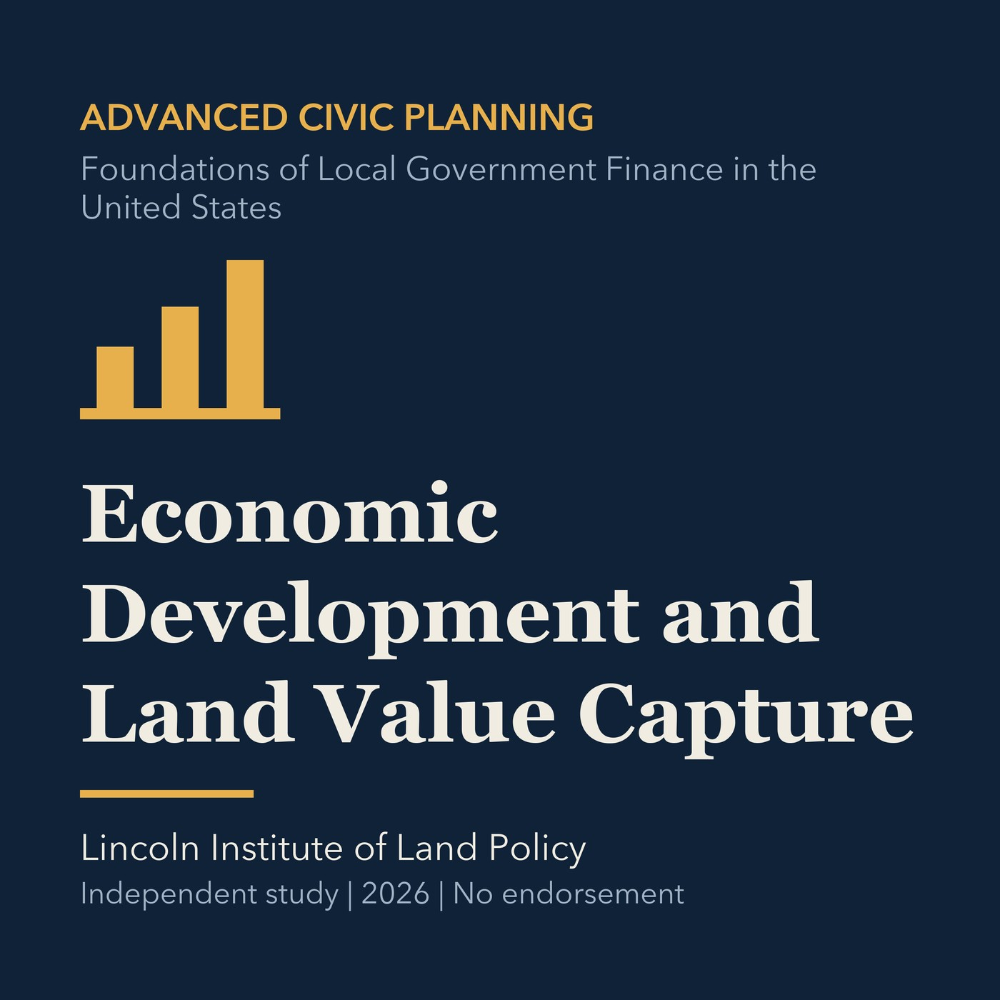

EPISODE 31
Economic Development and Land Value Capture
Compares economic development tools and ways public action can recover created land value.

- Stable GUID
3f413a62-7266-5b33-a922-816f37807efc- Release
- advanced-civic-planning-v2026.2
- SHA-256
0d451c8a2177e1c834e1ecb07623e70ff5baa3ff00c1cf475a9913af30600e90